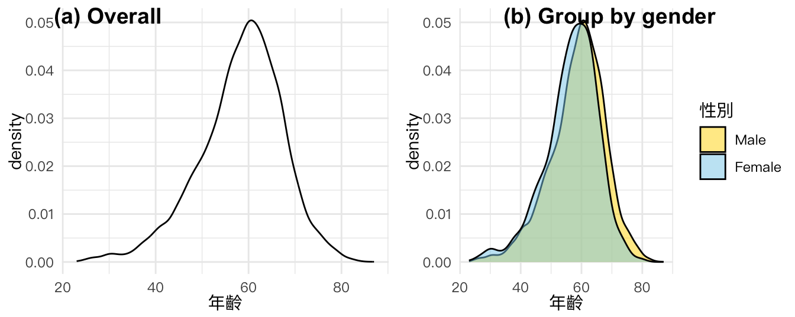
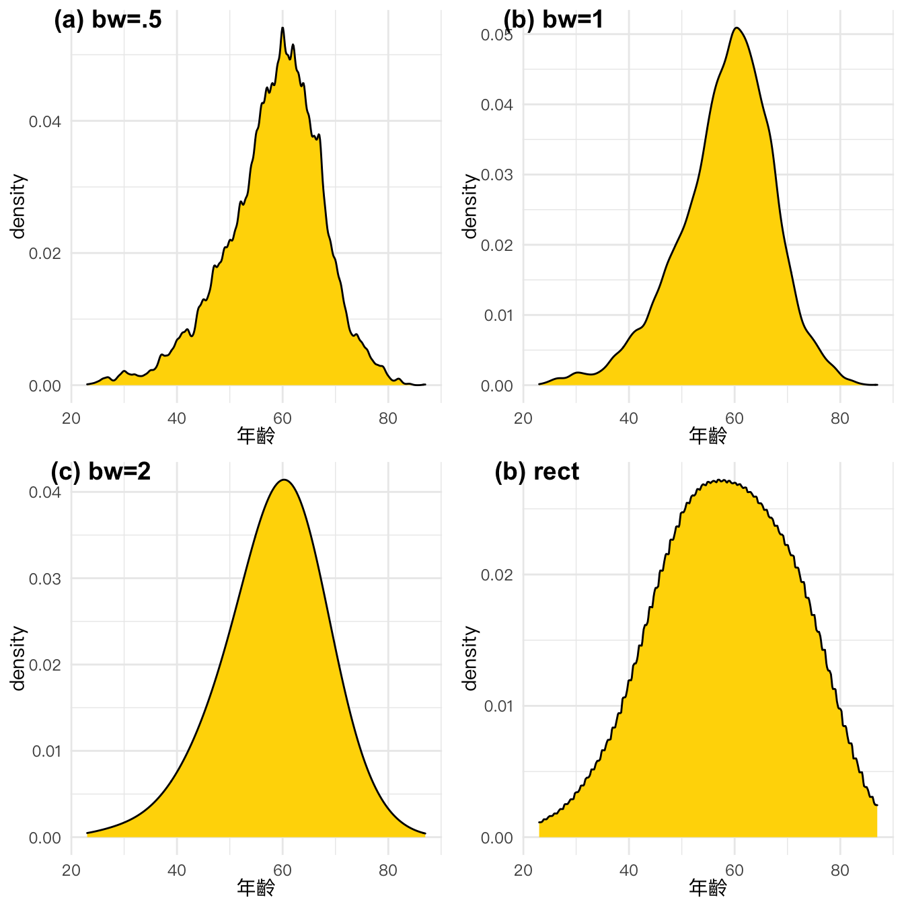
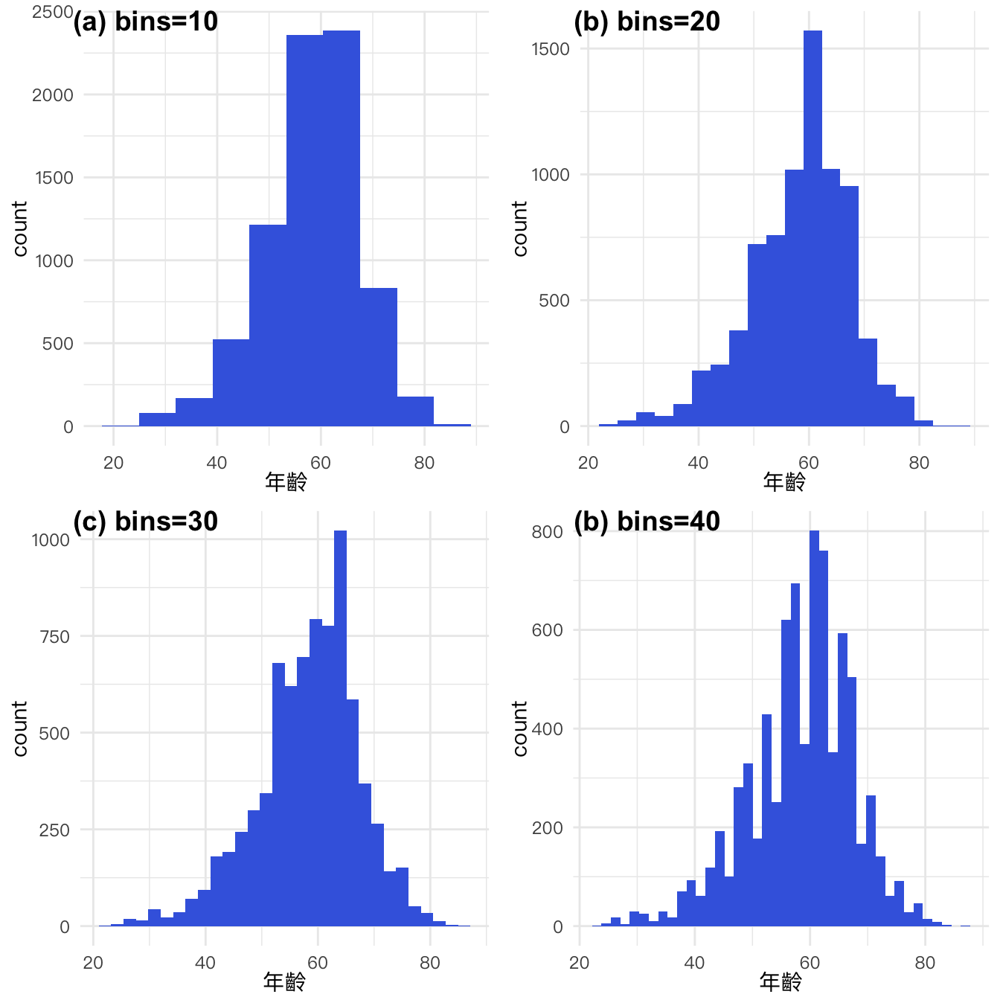
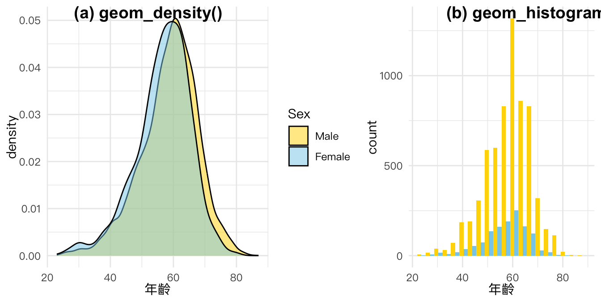
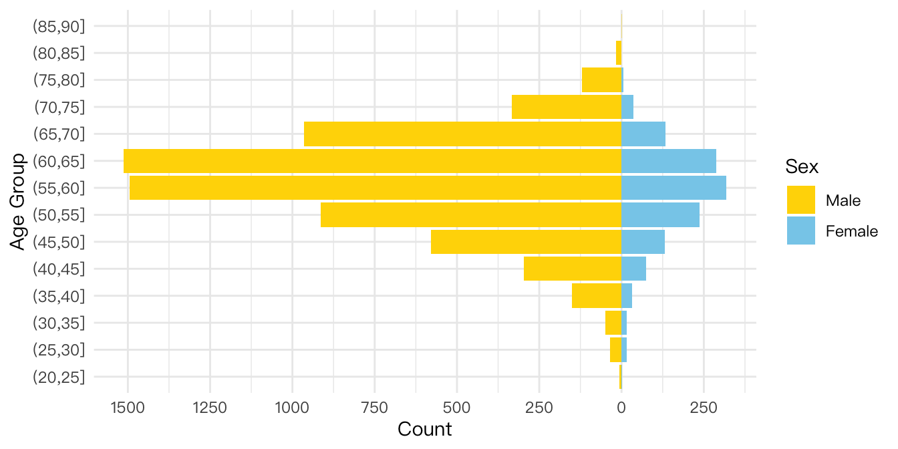
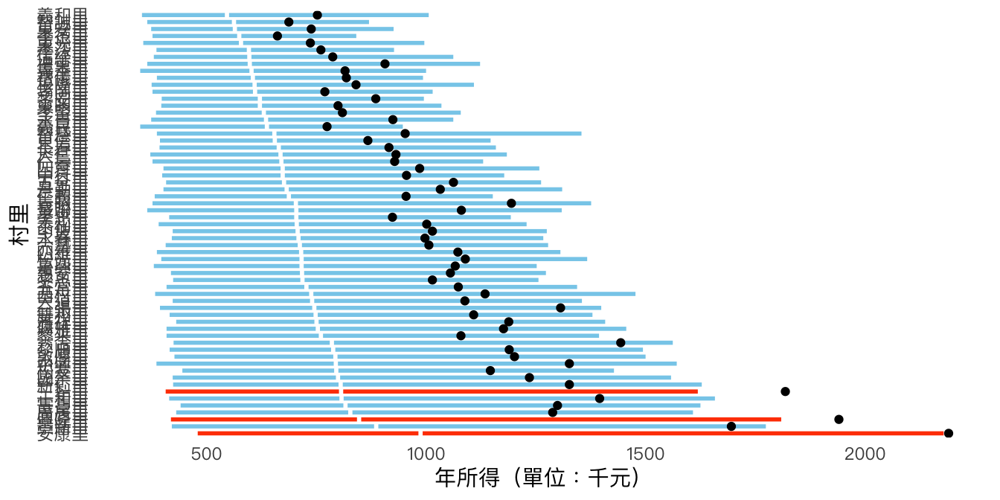

Chapter 22 DISTRIBUTION: Histogram & Density
本章節將介紹與資料分布相關的視覺化方法。資料分布是指數據中每個值出現的頻率或概率。在統計學中，了解資料分布是非常重要的，因為它可以幫助我們判斷數據是否為正態分佈，或者是否存在異常值或極端值。本章節將涵蓋常見的資料分布視覺化方法，包括直方圖、密度圖、箱形圖和金字塔圖等。
以下是R語言ggplot2套件中，用於資料分布視覺化的一些常用函式：
geom_histogram()：用於創建直方圖。geom_density()：用於創建密度圖。geom_boxplot()：用於創建箱形圖。geom_bar()：用於創建柱狀圖。geom_freqpoly()：用於創建頻率多邊形圖。
註：本節的設計概念不少是參考 Claus O. Wilke 所著的「Foundations of Data Visualization」一書的章節，同時也參考臺灣和資料新聞的案例進行了改編。
接下來我們將使用Histogram和Density Plot這兩種資料視覺化方法來探索台灣村里長的年齡和性別分布情況。我們所使用的資料來源包括內政部和中選會的投票資料，這些資料能夠提供具有代表性的統計樣本，幫助我們更好地了解村里長的整體特徵。在進行資料視覺化的過程中，我們將會運用R語言中的ggplot2套件，並根據不同的視覺化需求進行相應的設置和調整。 https://www.moi.gov.tw/LocalOfficial.aspx?n=577&TYP=KND0007。
vilmaster <- readr::read_csv("data/tw_vil2018_elccand.csv") %>%
drop_na(當選註記)22.1 Density plot
密度圖（Density Plot)是一種展示數據集分佈情況的圖表，它可以幫助我們更好地理解數據集中數值出現的概率。圖表的 X 軸代表數據集的數值範圍，Y 軸則代表每個數值的出現概率。與直方圖不同，密度圖的曲線是光滑的，因為它是通過連續的數值範圍估算出的概率密度函數。通過比較不同數據集的密度圖，我們可以更好地了解它們之間的差異。在ggplot2中，可以用geom_density()函數來創建密度圖。
p1 <- vilmaster %>%
ggplot() + aes(年齡) +
geom_density() + th
p2 <- vilmaster %>%
ggplot() + aes(年齡, fill=factor(性別)) +
geom_density(alpha=0.5) + th +
scale_fill_manual(
limits=c('1', '2'), # original chart group
values=c("gold", "skyblue"), # map to color
name="性別", # legend title
breaks=c(1, 2), # original legend group labels
labels=c("Male","Female"), # map to new labels
na.value = "lightgrey" # color for other groups
)
cowplot::plot_grid(
p1, p2,
labels = c("(a) Overall", "(b) Group by gender"),
nrow = 1, rel_widths = c(1, 1)
)
22.1.1 Density with different bandwidth
參數bw指的是bnadwidth，為繪製histogram時的bar所涵蓋的資料寬度。以step-plot來說，bw越大，則梯距越寬；以density-plot來說，若bw越大則越是平滑。
library(ggridges) # for geom_density_line()
p.b05 <- vilmaster %>% ggplot() + aes(年齡) +
geom_density_line(fill='gold', bw=0.5, kernel='gaussian') + th
p.b1 <- vilmaster %>% ggplot() + aes(年齡) +
geom_density_line(fill='gold', bw=1, kernel='gaussian') + th
p.b5 <- vilmaster %>% ggplot() + aes(年齡) +
geom_density_line(fill='gold', bw=5, kernel='gaussian') + th
p.rect <- vilmaster %>% ggplot() + aes(年齡) +
geom_density_line(fill='gold', bw=10, kernel='rectangular') + th
cowplot::plot_grid( p.b05, p.b1, p.b5, p.rect,
labels = c("(a) bw=.5", "(b) bw=1", "(c) bw=2", "(b) rect"),
nrow = 2, rel_widths = c(1, 1)
)
22.2 Histogram
直方圖（Histogram）是一種用於展示數據集分佈的圖表。它通過將數據範圍分成若干個區間（稱為 “bins” 或 “buckets”），然後計算落在每個區間內的數據的數量（稱為 “frequency”），來展示數據集的分佈情況。直方圖的 X 軸表示數據範圍，Y 軸表示每個區間中的頻數。直方圖可以幫助我們快速了解數據的分佈情況，特別是數據的中心趨勢、數據的離散程度和是否存在異常值等。
22.2.1 Histogram with different number of bins
p10 <- vilmaster %>%
ggplot() + aes(年齡) +
geom_histogram(bins=10, fill='royalblue') + th
p20 <- vilmaster %>%
ggplot() + aes(年齡) +
geom_histogram(bins=20, fill='royalblue') + th
p30 <- vilmaster %>%
ggplot() + aes(年齡) +
geom_histogram(bins=30, fill='royalblue') + th
p40 <- vilmaster %>%
ggplot() + aes(年齡) +
geom_histogram(bins=40, fill='royalblue') + th
cowplot::plot_grid(
p10, p20, p30, p40,
labels = c("(a) bins=10", "(b) bins=20", "(c) bins=30", "(b) bins=40"),
nrow = 2, rel_widths = c(1, 1)
)
22.2.2 Density vs histogram
Histogram通常用來顯示數據的分佈情況，它會把數據區間分成若干個等寬的區間，然後計算每個區間內數據的頻率，再將這些頻率表示在y軸上。因此，histogram顯示的是數據的頻率，而不是數據的密度。
Density plot則是用來顯示數據的概率密度函數，它會通過核密度估計（Kernel Density Estimation, KDE）方法，將數據點周圍的密度估計出來，然後將這些估計值表示在y軸上。因此，density plot顯示的是數據的密度，而不是數據的頻率。
pd <- vilmaster %>%
ggplot() + aes(年齡, fill=factor(性別)) +
geom_density(alpha=0.5) + th +
scale_fill_manual(
values=c("1"='gold', '2'="skyblue"),
labels=c('1'="Male",'2'="Female"),
name='Sex'
)
ph <- vilmaster %>%
ggplot() + aes(年齡, fill=factor(性別)) +
geom_histogram(bins=20, position="dodge") + th +
scale_fill_manual(values=c("1"='gold', '2'="skyblue ")) +
theme(legend.position="none")
cowplot::plot_grid(
pd, ph,
labels = c("(a) geom_density()", "(b) geom_histogram()"),
nrow = 1, rel_widths = c(6, 4)
)
22.2.3 Positions of bar chart
p.hist.dodge <- vilmaster %>%
ggplot() + aes(年齡, fill=factor(性別)) +
geom_histogram(bins=20, position="dodge") + th +
scale_fill_manual(
values=c("1"='gold', '2'="skyblue "),
labels=c('1'="Male",'2'="Female"),
name='Sex'
)
p.hist.stack <- vilmaster %>%
ggplot() + aes(年齡, fill=factor(性別)) +
geom_histogram(bins=20, position="stack") + th +
scale_fill_manual(values=c("1"='gold', '2'="skyblue ")) +
theme(legend.position="none")
cowplot::plot_grid(
p.hist.dodge, p.hist.stack,
labels = c("(a) position:dodge", "(b) position:stack"),
nrow = 1, rel_widths = c(6, 4)
)
22.2.4 Display two groups histogram by facet_wrap()
geom_histogram(bins=20, position="dodge")用於繪製直方圖，bins=20表示將數據分成20個區間，position="dodge"表示將不同性別的數據分開顯示。th是本範例在最早先所建立的ggplot主題，用於設置圖表的樣式（例如背景顏色、字體等）。scale_fill_manual()用於手動設置填充顏色，values=c("1"='gold', '2'="skyblue")表示性別為1時填充金色，性別為2時填充天藍色。labels=c('1'="Male",'2'="Female")表示將性別1標記為Male，性別2標記為Female。name='Sex'表示設置顏色圖例的標題為Sex。facet_wrap(.~性別, nrow=1)表示將不同性別的數據分開顯示，每直行顯示一個性別。.~性別表示將數據按性別分組。
vilmaster %>%
ggplot() + aes(年齡, fill=factor(性別)) +
geom_histogram(bins=20, position="dodge") + th +
scale_fill_manual(
values=c("1"='gold', '2'="skyblue "),
labels=c('1'="Male",'2'="Female"),
name='Sex'
) +
facet_wrap(.~性別, nrow=1)
22.3 Pyramid Plot
金字塔圖（Pyramid plot）是一種用於比較兩個群體的統計圖表。它的形狀像一座金字塔，通常用於展示男女或年齡分佈等相關的數據。金字塔圖以垂直線為軸線，其中一側代表一個群體（如男性），另一側代表另一個群體（如女性）。圖表的左右兩側是對稱的，並以一條中心線分開。圖表中的每一行表示一個年齡段，而每一列則表示一個群體的比例或頻數。金字塔圖的高度表示總人數或總比例，並且可以用不同的顏色區分不同的群體。金字塔圖可以直觀地顯示兩個群體之間的差異，特別是在不同年齡段之間。
22.3.1 Modify geom_col() to pyramid plot
vilmaster %>%
group_by(性別) %>%
mutate(age_group = cut(年齡, 0:20*5+.01)) %>%
count(age_group) %>%
ungroup() %>%
ggplot() + aes(x=age_group,
y=ifelse(性別=='1', -1, 1)*n,
fill=factor(性別)) +
geom_col() +
scale_y_continuous(name = "Count", breaks = 250*(-6:2), labels = c("1500", "1250", "1000", "750", "500", "250", "0", "250", "500")) +
coord_flip() +
scale_fill_manual(
values=c("1"='gold', '2'="skyblue "),
labels=c('1'="Male",'2'="Female"),
name='Sex'
) + th + labs(y="Count", x="Age Group")
22.4 Box plot: Muitiple Distrubution
箱形圖（Box plot）是一種用於展示數據分佈情況的統計圖表。它通常顯示數據的中位數、四分位數、極值和異常值等統計量。箱形圖的中間線表示數據的中位數，箱子的上下邊界則分別表示數據的上四分位數和下四分位數。箱子的高度表示數據的變異程度，而箱子外的線段則表示數據的最大值和最小值。如果數據中存在異常值，則通常使用圓圈或星號等符號來標記。箱形圖可以用來比較不同數據集之間的分佈情況，以及檢查數據是否存在異常值。
22.4.1 TW-Salary (boxplot)
Inspired by Six Myths About Choosing a College Major - The New York Times (nytimes.com) and What’s Going On in This Graph? | Jan. 9, 2018 - The New York Times (nytimes.com)

library(readxl)
raw <- read_excel("data/tw_salary109.xlsx", sheet=1, trim_ws = T)
raw| Category | Q1 | Median | Q3 | Mean |
|---|---|---|---|---|
| 男 | 39.0 | 53.2 | 82.3 | 70.7 |
| 女 | 35.1 | 46.8 | 67.6 | 58.6 |
| 未滿25歲 | 28.1 | 35.8 | 45.1 | 37.7 |
| 25-29歲 | 36.6 | 47.8 | 61.7 | 53.0 |
| 30-39歲 | 39.2 | 53.3 | 77.0 | 64.1 |
| 40-49歲 | 39.9 | 56.9 | 91.8 | 74.8 |
| 50-64歲 | 37.8 | 53.3 | 88.4 | 75.5 |
| 65歲以上 | 30.6 | 40.9 | 63.1 | 62.6 |
| 國中及以下 | 32.7 | 40.5 | 52.0 | 45.4 |
| 高中（職） | 34.5 | 44.7 | 59.8 | 51.9 |
| 大專 | 38.6 | 53.7 | 80.2 | 67.0 |
| 研究所 | 60.9 | 96.0 | 139.3 | 116.4 |
| 礦業及土石採取業 | 34.2 | 57.2 | 91.7 | 68.5 |
| 製造業 | 38.7 | 50.4 | 73.2 | 64.8 |
| 電力及燃氣供應業 | 73.9 | 110.7 | 139.9 | 113.2 |
| 用水供應及污染整治業 | 31.9 | 45.7 | 63.9 | 54.6 |
| 營建工程業 | 34.1 | 46.1 | 64.0 | 54.7 |
| 批發及零售業 | 36.6 | 49.5 | 71.7 | 62.7 |
| 運輸及倉儲業 | 40.3 | 58.3 | 81.4 | 66.1 |
| 住宿及餐飲業 | 30.1 | 36.7 | 49.3 | 42.0 |
| 出版﹑影音製作﹑傳播及 | ||||
| 資通訊服務業 | 53.0 | 71.5 | 111.2 | 88.8 |
| 金融及保險業 | 65.6 | 96.9 | 140.1 | 113.4 |
| 不動產業 | 36.8 | 52.2 | 76.6 | 65.0 |
| 專業科學及技術服務業 | 41.9 | 61.3 | 95.0 | 77.5 |
| 支援服務業 | 33.1 | 42.1 | 49.3 | 45.3 |
| 教育業-不含小學以上各級 | ||||
| 學校 | 28.4 | 33.7 | 42.7 | 37.2 |
| 醫療保健及社會工作服務業 | 41.3 | 60.1 | 88.1 | 77.1 |
| 藝術娛樂及休閒服務業 | 28.8 | 39.2 | 57.2 | 48.8 |
| 其他服務業 | 30.6 | 35.8 | 49.1 | 43.6 |
raw %>%
slice(-(1:12)) %>%
mutate(Category = reorder(Category, desc(Median))) %>%
ggplot() + aes(y = Category,
xlower=Q1, xmiddle=Median, xupper=Q3, xmin=0, xmax=150) +
geom_boxplot(stat = "identity", color="white", fill="skyblue") +
geom_point(aes(x = Mean)) +
th +
theme(panel.grid.minor = element_blank(),
panel.grid.major = element_blank())
22.4.2 TW-Income (boxplot)
如果在箱型圖中，平均數高於第三分位數，這代表數據集呈現右偏分佈。也就是說，數據中的大部分觀測值都分佈在第一、二分位數之間，但存在一些較大的極端值，使平均值被往右偏移。
library(gghighlight)
toplot <- read_csv("data/tw_income_107.csv", ) %>%
filter(!`村里` %in% c("合計", "其他", "福住里")) %>%
filter(鄉鎮市區 %in% c("信義區")) %>%
mutate(村里 = reorder(村里, desc(中位數)))
toplot %>%
mutate(group = if_else((平均數>第三分位數), "highlight", "none")) %>%
ggplot() + aes(y = 村里,
xlower=第一分位數, xmiddle=中位數, xupper=第三分位數,
xmin= min(第一分位數), xmax=max(第三分位數), fill=group) +
geom_boxplot(stat = "identity", color="white") +
scale_fill_manual(values = c("highlight"="orangered", "none"="skyblue")) + guides(fill=FALSE) +
geom_point(aes(x = 平均數)) +
xlab("年所得（單位：千元）") +
th +
theme(panel.grid.minor = element_blank(),
panel.grid.major = element_blank())